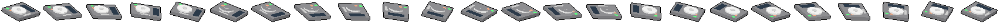

Blog
Notes on preparing music for a gig — what the app decides, what stays with the DJ, and how the stick ends up in the format your player reads.
-

Which player is in the booth?
A promoter writes back “we have CDJs” and everyone treats the question as settled. It isn’t — and the difference decides which format you write. What to ask, and what to do without an answer. Read → -

Who picks the tracks: you or Alpha?
Tell a DJ that software builds their set and the conversation usually ends there. Here is the honest split: what Alpha decides, what you set before it starts, and what it never touches. Read →